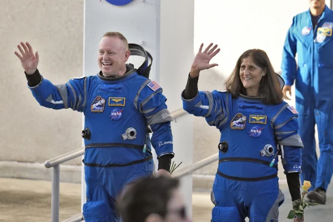

DESCUBRE LOS PLANETAS

ULTIMAS NOTICIAS
Marte podría albergar océanos subterráneos demasiado profundos según la NASA
InSight, el módulo de la NASA, ha revelado una gigantesca reserva subterránea de agua en Marte, ubicada a gran profundidad.
Leer más
Más grande que Júpiter y liviano como algodón de azúcar: el planeta que sorprendió a los astrónomos
Un cuerpo celeste ha desconcertado a los científicos. Su existencia plantea preguntas cruciales sobre la composición y origen de algunos mundos.
Leer más

La NASA decide que los dos astronautas varados no regresarán a la Tierra hasta febrero de 2025
La agencia dijo que es demasiado arriesgado traer ahora a Butch Wilmore y Suni Williams en la dañada cápsula de Boeing, y que lo harán a bordo de una nave de SpaceX dentro de seis meses.
Leer más